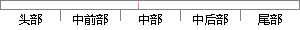

支持同优先级任务即多个任务可以拥有相同的优先级，而不同优先级是每个任务必须分配各不相同的优先级。
片段位置图

相似结果
相似片段：对称多处理器硬件系统提供良好的操作系统级的支持,...都不同,因此任务的优先级也同时唯一标示了该任务...即不同任务可以拥有相同的一级优先级;第二级表示...
| 标题 | 《嵌入式非对称多处理器操作系统的构建》 |
| 对比库 | 中国学位论文全文数据库 |
| 作者 | 程昊 |
| 机构 | 太原理工大学 |
| 分类 | 计算机软件与理论 |
| 年份 | 2006 |
| 相似率 | 70% （轻度抄袭） |
※ 片段修改建议 ※
近似词参考：- 拥有：具有
- 分配：分派
- 任务：使命 义务
- 每个：每一个
- 相同：不异 沟通 雷同
- 支持：撑持 支撑
- 不同：分歧 差别
- 必须：必需
系统自动生成语句：撑持同优先级使命即多个使命可以具有不异的优先级，而分歧优先级是每一个使命必需分派各不不异的优先级。
注：本片段修改建议为系统自动生成，仅供参考。